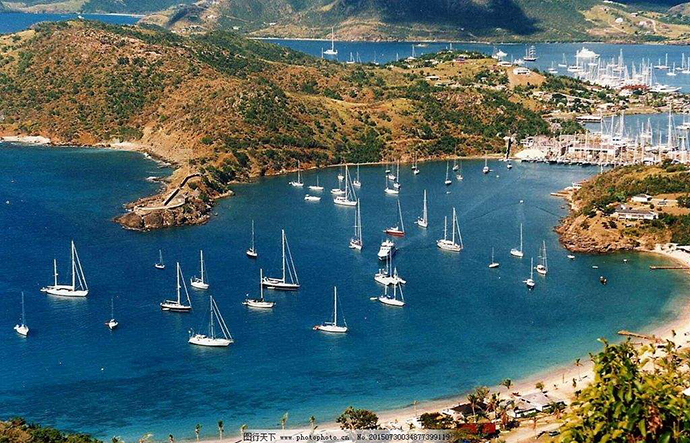

圣基茨投资公民项目始于1983年，是全世界历史最悠久的公民项目。它通过严格执行投资需求和细致的尽职调查程序而卓越于其他类似的计划。2017年因飓风影响，圣基茨更新新政，捐款金额下降至15万美金。
1. 房产——购买投资入籍局认可的房地产项目40万美金以上的房产。
2. 捐款——向糖业多元化基金会(SIDF，慈善组织)至少捐款15万美金以上。
圣基茨和尼维斯在1983年9月19日独立，现为英联邦成员国之一，面积267平方公里。人口约4.6万，黑人占94%，另有白人和混血种人。居民多信奉基督教。英语为官方语言和通用语。圣基茨与尼维斯联邦是英联邦的成员国家，其签证可免签全球120个国家。圣基茨无须缴纳个人所得税，无资本利得税，无净资产税，无遗产税、继承税和赠与税，非全球征税，无海外收益税，是世界级离岸税务天堂。同时，中国与圣基茨和尼维斯无外交关系。
以色列、德国、英国、法国、希腊、意大利、波兰、西班牙、葡萄牙、挪威、新加坡、瑞典、瑞士、荷兰、捷克共和国、丹麦、芬兰、马尔代夫、匈牙利、阿根廷、香港、澳门、马来西亚、毛里求斯、拉脱维亚、立陶宛、阿科罗提利、安道尔、安圭拉、南非、亚美尼亚、奥地利、巴哈马群岛、孟加拉、巴巴多斯、印度礁、比利时、伯利兹、百慕大、博茨瓦纳、布维岛、英属印度洋领地、英属维京群岛、保加利亚、开曼群岛、智利、克利珀顿岛、哥伦比亚、科摩罗岛、库克岛、哥斯达黎加、冈比亚、格鲁吉亚、直布罗陀、格洛里厄斯群岛、格陵兰、格林纳达、瓜德罗普岛、危地马拉、格恩西岛、圭亚那、洪都拉斯、冰岛、爱尔兰、英属曼岛、牙买加、扬马延岛、泽西岛、新胡安岛、哈萨克斯坦、肯尼亚、基里巴斯、吉尔吉斯斯坦、新喀里多尼亚、尼加拉瓜、纽埃、帕劳群岛、巴拿马、秘鲁、留尼旺岛、罗马尼亚、圣赫勒拿岛、圣卢西亚岛、圣皮埃尔和密克隆岛、圣文森特和格林纳丁斯、萨摩亚、圣马力诺、塞舌尔、斯洛伐克、斯洛文尼亚、所罗门岛、南乔治亚岛、南桑威奇群岛、苏里南、斯瓦尔巴群岛、克罗地亚、古巴、塞浦路斯、德凯利亚、多米尼加岛、多米尼加共和国、厄瓜多尔、萨尔瓦多、爱沙尼亚、欧罗巴岛、斐济、法属圭亚那、法属玻里尼西亚、法属南部领地、莱索托、列支敦士登、卢森堡、马其顿、马拉维、马耳他、马提尼克、马约特岛、密克罗尼西亚、蒙特色拉特岛、瑙鲁、坦桑尼亚、汤加、台湾、俄罗斯、图瓦卢、乌干达、瓦努阿图、委内瑞拉、沃里斯与伏塔那岛、约旦河西岸、赞比亚、津巴布韦、安提瓜和巴布达、阿鲁巴、荷属安的列斯群岛、法罗群岛、罗马教廷。